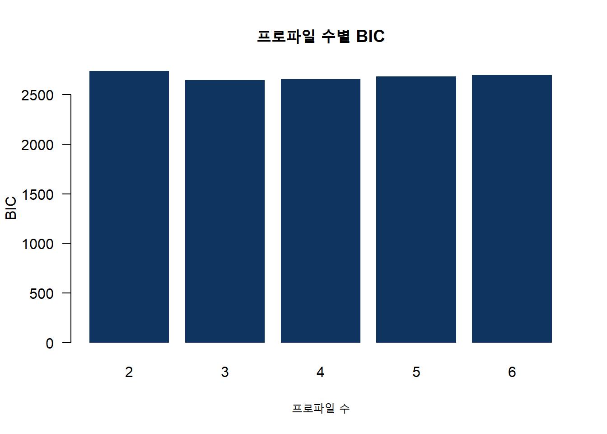
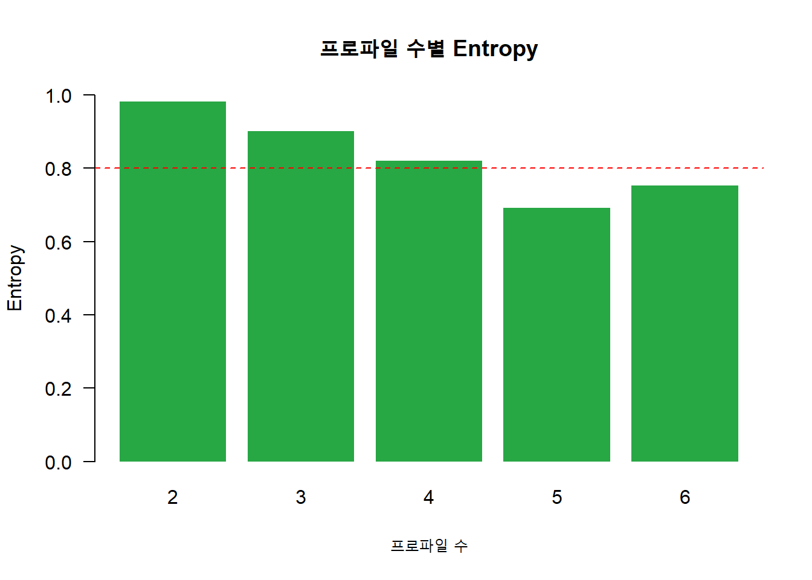
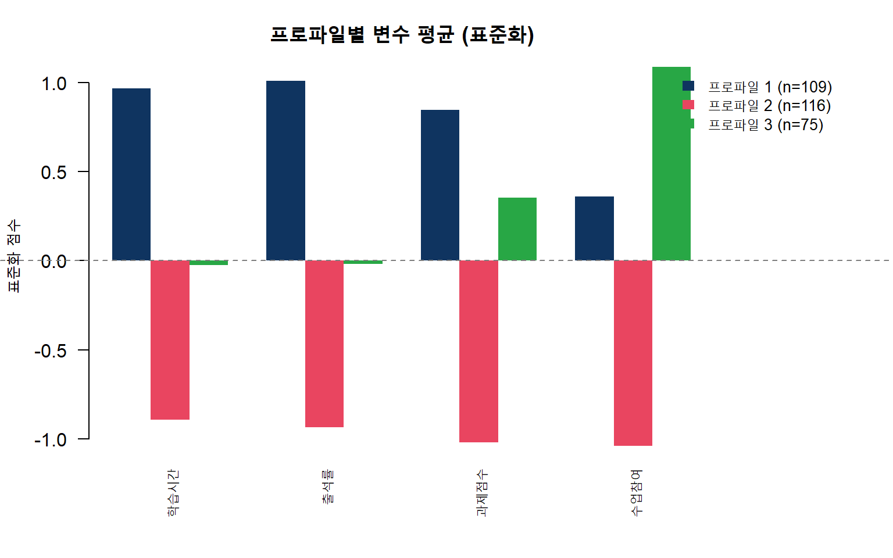
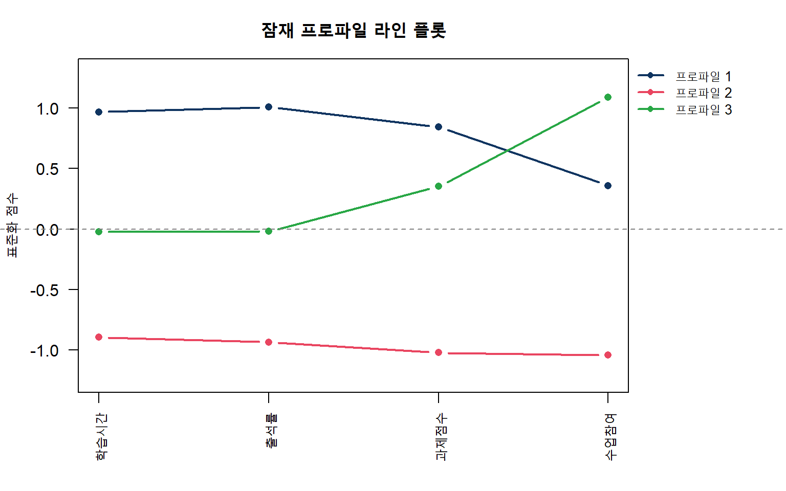
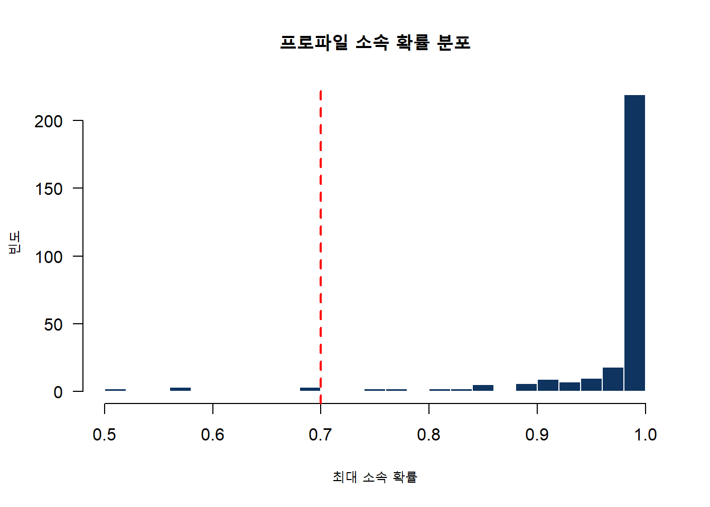

if (!require("tidyLPA")) install.packages("tidyLPA", quiet = TRUE)
if (!require("dplyr")) install.packages("dplyr", quiet = TRUE)
if (!require("tidyr")) install.packages("tidyr", quiet = TRUE)
library(tidyLPA)
library(dplyr)
library(tidyr)잠재 프로파일 분석(LPA)이란?
잠재 프로파일 분석(Latent Profile Analysis, LPA)은 관측된 연속형 변수들의 패턴을 기반으로 응답자를 잠재적인 하위 집단(프로파일)으로 분류하는 혼합 모형(mixture model)입니다.
언제 사용하나?
- 학생들의 학습 유형 분류
- 소비자 세그먼트 도출
- 직원 직무만족 프로파일 분석
- 환자의 증상 패턴 군집화
LPA vs 군집분석(K-means)
| LPA | K-means | |
|---|---|---|
| 분류 방식 | 확률 기반 (소프트 분류) | 거리 기반 (하드 분류) |
| 결과 | 각 프로파일 소속 확률 | 하나의 군집에 할당 |
| 모형 적합도 | BIC, AIC 등 통계적 지표 | 실루엣, 엘보우 등 |
| 가정 | 정규 혼합 분포 | 구형 군집 |
| 유연성 | 분산/공분산 구조 선택 가능 | 제한적 |
분석 준비
패키지 설치 및 로드
예제 데이터 생성
대학생 300명의 학습 관련 변수 4개를 시뮬레이션합니다.
set.seed(2026)
# 프로파일 1: 성실형 (높은 학습시간, 높은 출석, 높은 과제, 보통 참여)
n1 <- 100
p1 <- data.frame(
학습시간 = rnorm(n1, 7, 1),
출석률 = rnorm(n1, 90, 5),
과제점수 = rnorm(n1, 85, 8),
수업참여 = rnorm(n1, 70, 10)
)
# 프로파일 2: 소극형 (낮은 전반)
n2 <- 120
p2 <- data.frame(
학습시간 = rnorm(n2, 3, 1.2),
출석률 = rnorm(n2, 65, 10),
과제점수 = rnorm(n2, 55, 12),
수업참여 = rnorm(n2, 40, 12)
)
# 프로파일 3: 전략형 (보통 학습시간, 높은 참여, 높은 과제)
n3 <- 80
p3 <- data.frame(
학습시간 = rnorm(n3, 5, 1),
출석률 = rnorm(n3, 78, 8),
과제점수 = rnorm(n3, 80, 10),
수업참여 = rnorm(n3, 85, 8)
)
students <- rbind(p1, p2, p3)
head(students, 10) 학습시간 출석률 과제점수 수업참여
1 7.520589 96.08133 81.54379 68.51408
2 5.920309 87.53078 88.66873 68.17047
3 7.139238 88.86108 83.16518 61.41852
4 6.915251 84.44176 70.14430 79.58159
5 6.333360 94.97917 82.68261 61.60923
6 4.483911 92.80914 99.13713 62.40276
7 6.264853 82.17861 81.45854 61.33485
8 5.979878 97.40539 80.28908 86.59026
9 7.113554 84.15397 84.03529 75.56942
10 6.526209 84.73993 98.22449 76.01386summary(students) 학습시간 출석률 과제점수 수업참여
Min. :-0.01538 Min. : 46.35 Min. : 23.76 Min. : 3.423
1st Qu.: 3.53218 1st Qu.: 67.45 1st Qu.: 58.43 1st Qu.: 42.824
Median : 4.90572 Median : 77.98 Median : 76.09 Median : 63.649
Mean : 4.89291 Mean : 77.31 Mean : 71.69 Mean : 61.735
3rd Qu.: 6.33882 3rd Qu.: 88.34 3rd Qu.: 84.35 3rd Qu.: 80.925
Max. : 9.41445 Max. :103.19 Max. :102.29 Max. :104.683 변수 표준화
LPA는 변수 간 스케일이 다르면 결과에 영향을 미치므로 표준화가 권장됩니다.
students_scaled <- students %>%
mutate(across(everything(), scale)) %>%
mutate(across(everything(), as.numeric))
head(students_scaled) 학습시간 출석률 과제점수 수업참여
1 1.3346201 1.4495471 0.57578293 0.30389912
2 0.5218259 0.7893993 0.99215469 0.28849464
3 1.1409291 0.8921050 0.67053504 -0.01420682
4 1.0271644 0.5509099 -0.09038749 0.80007457
5 0.7316177 1.3644540 0.64233387 -0.00565701
6 -0.2077315 1.1969168 1.60391372 0.02991814모형 적합: 프로파일 수 결정
LPA에서 가장 중요한 단계는 최적 프로파일 수를 결정하는 것입니다.
2~6개 프로파일 비교
fit_results <- students_scaled %>%
estimate_profiles(2:6)
fit_stats <- get_fit(fit_results)
fit_stats[, c("Classes", "LogLik", "AIC", "BIC", "Entropy", "n_min", "BLRT_p")]# A tibble: 5 × 7
Classes LogLik AIC BIC Entropy n_min BLRT_p
<int> <dbl> <dbl> <dbl> <dbl> <dbl> <dbl>
1 2 -1332. 2690. 2738. 0.982 0.393 0.00990
2 3 -1272. 2580. 2646. 0.901 0.25 0.00990
3 4 -1262. 2571. 2656. 0.820 0.177 0.00990
4 5 -1262. 2581. 2684. 0.692 0.103 1
5 6 -1255. 2575. 2698. 0.753 0.0533 0.109 적합도 지표 해석
| 지표 | 기준 |
|---|---|
| AIC / BIC | 낮을수록 좋음. BIC를 더 많이 사용 |
| Entropy | 0~1 사이. 0.8 이상이면 분류 정확도 높음 |
| BLRT p-value | 유의하면(< .05) 프로파일 수 증가가 정당화됨 |
| n_min | 가장 작은 프로파일의 비율. 너무 작으면(< 5%) 불안정 |
적합도 시각화
# BIC 비교
barplot(fit_stats$BIC, names.arg = fit_stats$Classes,
col = "#0f3460", border = NA,
main = "프로파일 수별 BIC",
xlab = "프로파일 수", ylab = "BIC", las = 1)
# Entropy 비교
barplot(fit_stats$Entropy, names.arg = fit_stats$Classes,
col = "#28a745", border = NA,
main = "프로파일 수별 Entropy",
xlab = "프로파일 수", ylab = "Entropy", las = 1,
ylim = c(0, 1))
abline(h = 0.8, lty = 2, col = "red")
최적 모형 선택 및 해석
BIC가 가장 낮고 Entropy가 높은 모형을 선택합니다.
# 3-프로파일 모형 적합
best_model <- students_scaled %>%
estimate_profiles(3)
# 프로파일 소속 결과
results <- get_data(best_model)
head(results[, c("학습시간", "출석률", "과제점수", "수업참여", "Class")])# A tibble: 6 × 5
학습시간 출석률 과제점수 수업참여 Class
<dbl> <dbl> <dbl> <dbl> <dbl>
1 1.33 1.45 0.576 0.304 1
2 0.522 0.789 0.992 0.288 1
3 1.14 0.892 0.671 -0.0142 1
4 1.03 0.551 -0.0904 0.800 1
5 0.732 1.36 0.642 -0.00566 1
6 -0.208 1.20 1.60 0.0299 1# 프로파일별 인원 수
table(results$Class)
1 2 3
109 116 75 프로파일별 평균 비교
profile_means <- results %>%
group_by(Class) %>%
summarise(across(c(학습시간, 출석률, 과제점수, 수업참여), mean),
n = n(),
.groups = "drop")
profile_means# A tibble: 3 × 6
Class 학습시간 출석률 과제점수 수업참여 n
<dbl> <dbl> <dbl> <dbl> <dbl> <int>
1 1 0.967 1.01 0.845 0.360 109
2 2 -0.893 -0.935 -1.02 -1.04 116
3 3 -0.0238 -0.0200 0.352 1.09 75프로파일 시각화
# 프로파일별 변수 평균 막대 그래프
vars <- c("학습시간", "출석률", "과제점수", "수업참여")
n_profiles <- nrow(profile_means)
colors <- c("#0f3460", "#e94560", "#28a745", "#f39c12", "#9b59b6", "#1abc9c")
par(mar = c(5, 4, 3, 8), xpd = TRUE)
bp <- barplot(
as.matrix(profile_means[, vars]),
beside = TRUE,
col = colors[1:n_profiles],
border = NA,
main = "프로파일별 변수 평균 (표준화)",
ylab = "표준화 점수",
las = 2,
cex.names = 0.9
)
abline(h = 0, lty = 2, col = "gray50")
legend("topright", inset = c(-0.2, 0),
legend = paste0("프로파일 ", 1:n_profiles,
" (n=", profile_means$n, ")"),
fill = colors[1:n_profiles], border = NA,
bty = "n", cex = 0.85)
라인 프로파일 플롯
par(mar = c(5, 4, 3, 8), xpd = TRUE)
x_pos <- 1:length(vars)
plot(x_pos, as.numeric(profile_means[1, vars]),
type = "b", pch = 16, lwd = 2, col = colors[1],
ylim = range(profile_means[, vars]) * 1.2,
xaxt = "n", xlab = "", ylab = "표준화 점수",
main = "잠재 프로파일 라인 플롯", las = 1)
axis(1, at = x_pos, labels = vars, las = 2)
for (i in 2:n_profiles) {
lines(x_pos, as.numeric(profile_means[i, vars]),
type = "b", pch = 16, lwd = 2, col = colors[i])
}
abline(h = 0, lty = 2, col = "gray50")
legend("topright", inset = c(-0.2, 0),
legend = paste0("프로파일 ", 1:n_profiles),
col = colors[1:n_profiles], lwd = 2, pch = 16,
bty = "n", cex = 0.85)
분류 정확도 확인
소속 확률 분포
# 각 학생의 최대 소속 확률
max_prob <- apply(results[, grep("CPROB", names(results))], 1, max)
hist(max_prob, breaks = 20, col = "#0f3460", border = "white",
main = "프로파일 소속 확률 분포",
xlab = "최대 소속 확률", ylab = "빈도", las = 1)
abline(v = 0.7, lty = 2, col = "red", lwd = 2)
cat(sprintf("소속 확률 0.7 이상 비율: %.1f%%\n", mean(max_prob >= 0.7) * 100))소속 확률 0.7 이상 비율: 95.0%cat(sprintf("소속 확률 0.8 이상 비율: %.1f%%\n", mean(max_prob >= 0.8) * 100))소속 확률 0.8 이상 비율: 93.0%소속 확률이 대부분 0.7 이상이면 분류가 명확한 것입니다.
원래 스케일로 해석
표준화된 점수는 해석이 어려우므로 원래 스케일의 평균도 확인합니다.
students$Class <- results$Class
original_means <- students %>%
group_by(Class) %>%
summarise(
학습시간_평균 = round(mean(학습시간), 1),
출석률_평균 = round(mean(출석률), 1),
과제점수_평균 = round(mean(과제점수), 1),
수업참여_평균 = round(mean(수업참여), 1),
인원수 = n(),
.groups = "drop"
)
original_means# A tibble: 3 × 6
Class 학습시간_평균 출석률_평균 과제점수_평균 수업참여_평균 인원수
<dbl> <dbl> <dbl> <dbl> <dbl> <int>
1 1 6.8 90.4 86.2 69.8 109
2 2 3.1 65.2 54.2 38.5 116
3 3 4.8 77 77.7 86 75프로파일 명명
분석 결과에 따라 각 프로파일에 의미 있는 이름을 부여합니다.
# 예시 (실제 결과에 따라 달라짐)
cat("프로파일 해석 예시:\n")프로파일 해석 예시:cat("- 프로파일 1: 성실 학습형 (높은 학습시간 + 출석)\n")- 프로파일 1: 성실 학습형 (높은 학습시간 + 출석)cat("- 프로파일 2: 소극 학습형 (전반적으로 낮음)\n")- 프로파일 2: 소극 학습형 (전반적으로 낮음)cat("- 프로파일 3: 전략적 참여형 (높은 참여 + 과제)\n")- 프로파일 3: 전략적 참여형 (높은 참여 + 과제)분산-공분산 구조 비교
tidyLPA는 4가지 모형 구조를 지원합니다.
| 모형 | 분산 | 공분산 |
|---|---|---|
| 1 | 동일 | 0 (고정) |
| 2 | 자유 | 0 (고정) |
| 3 | 동일 | 동일 |
| 6 | 자유 | 자유 |
# 모형 1 vs 2 비교 (3-프로파일 기준)
model_1 <- students_scaled %>% estimate_profiles(3, variances = "equal", covariances = "zero")
model_2 <- students_scaled %>% estimate_profiles(3, variances = "varying", covariances = "zero")
cat("모형 1 (동일분산, 공분산=0)\n")모형 1 (동일분산, 공분산=0)cat(sprintf(" BIC: %.1f, Entropy: %.3f\n",
get_fit(model_1)$BIC, get_fit(model_1)$Entropy)) BIC: 2646.3, Entropy: 0.901cat("모형 2 (자유분산, 공분산=0)\n")모형 2 (자유분산, 공분산=0)cat(sprintf(" BIC: %.1f, Entropy: %.3f\n",
get_fit(model_2)$BIC, get_fit(model_2)$Entropy)) BIC: 2616.3, Entropy: 0.943보고서 작성 가이드
LPA 결과를 논문이나 보고서에 작성할 때 포함해야 할 내용:
1. 모형 선택 근거
“2~6개 프로파일 모형을 비교한 결과, BIC 값과 Entropy, BLRT 검정 결과를 종합적으로 고려하여 3-프로파일 모형을 최적 모형으로 선택하였다.”
2. 적합도 표
| 프로파일 수 | AIC | BIC | Entropy | BLRT p |
|---|---|---|---|---|
| 2 | … | … | … | … |
| 3 | … | … | … | … |
| 4 | … | … | … | … |
3. 프로파일 특성 기술
“프로파일 1(성실 학습형, n=100, 33.3%)은 학습시간(M=7.0), 출석률(M=90.0), 과제점수(M=85.0) 모두 높은 집단으로…”
4. 주의사항
- 표본 크기: 프로파일당 최소 50명 이상 권장
- 변수 선택: 이론적 근거 기반으로 변수 선택
- 재현성: 다른 표본에서도 유사한 프로파일이 도출되는지 확인
- 로컬 최적해: 시작값(random starts)을 충분히 설정